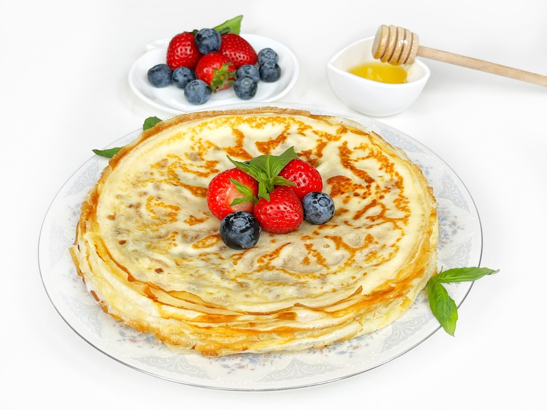
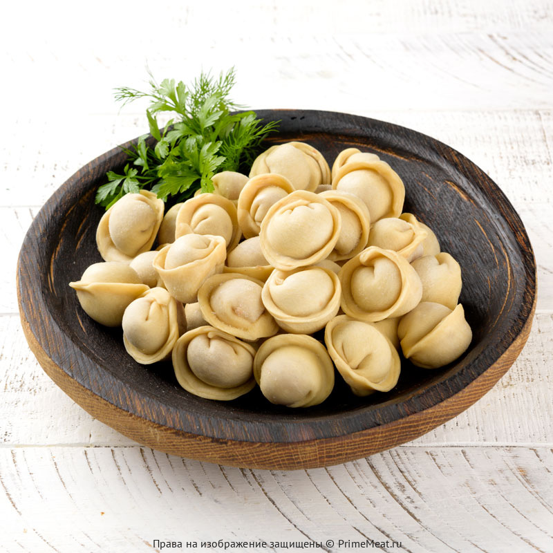
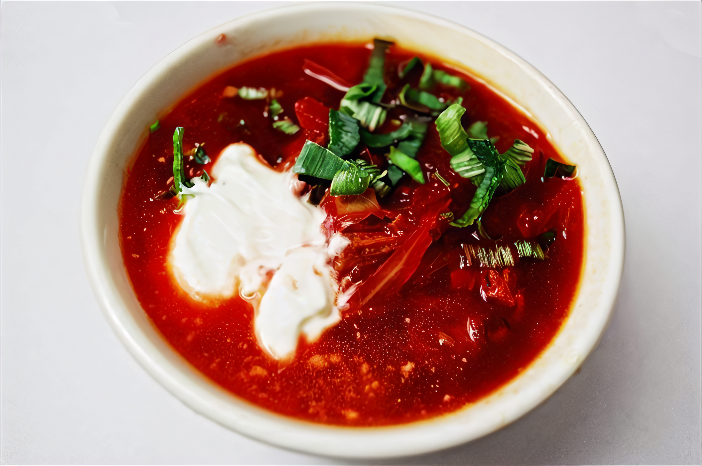

Смешайте муку, молоко, яйца, сахар, соль и растительное масло до консистенции жидкой сметаны. Разогрейте сковороду, налейте тесто тонким слоем. Жарьте до золотистости с обеих сторон. Подавайте блины горячими с икрой, сметаной, мёдом или вареньем.

Замесите тесто из муки, воды, яйца и соли. Приготовьте фарш из говядины и свинины с луком. Раскатайте тесто, вырежьте кружочки, положите фарш и защипните края. Варите в подсоленной воде 7-10 минут после всплытия. Подавайте с маслом или сметаной.

Для приготовления понадобятся свекла, капуста, картофель, морковь, лук, томатная паста и говядина. Сварите мясной бульон, добавьте картофель. Сделайте зажарку из моркови, лука и свеклы с томатом. Заправьте борщ, добавьте капусту, варите до готовности. Подавайте со сметаной.